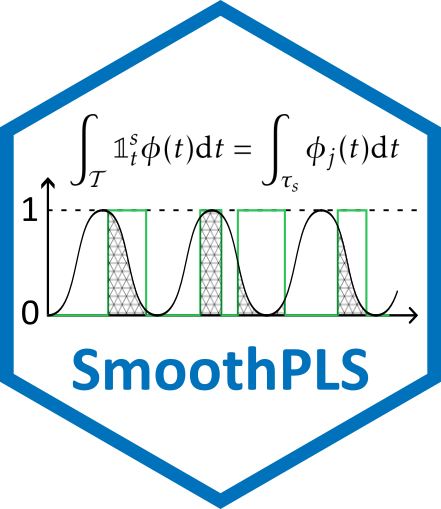

Overview
SmoothPLS is an R package designed for Hybrid Functional Data Analysis. It implements a novel approach to Functional Partial Least Squares (FPLS) by integrating categorical functional predictors through the concept of Active Area Integration.
This work was developed as part of a PhD project at DECATHLON in collaboration with INRIA.
Key Features
- Smooth PLS: Integration of categorical states as indicator functions for smoother regression curves.
- Hybrid Data: Seamlessly handle both Scalar Functional Data (SFD) and Categorical Functional Data (CFD).
- Interpretability: Provides regression curves even for discrete state changes.
- Comparison Suite: Built-in functions to compare results with Naive (discretized) PLS and Standard Functional PLS.
Mathematical Intuition
The core innovation lies in treating categorical predictors not as simple dummy variables, but as functional indicator functions .
The model computes components by integrating over the specific intervals where a state is present:
This ensures that the smoothing process respects the physical reality of state transitions while maintaining the continuous framework of Functional PLS.
Installation
Currently in development. Install the latest stable version using:
# install.packages("devtools")
devtools::install_github("FrancoisBassac/SmoothPLS")📖 Documentation
The complete package documentation—including function references, detailed vignettes, and usage examples—is available online:

👉 Explore the SmoothPLS documentation website
🚀 Quick Start Example
Based on the single-state CFD vignette, here is how to fit and compare models:
library(SmoothPLS)
# 1. Generate Synthetic Data
df_x <- generate_X_df(nind = 100, curve_type = 'cat')
Y_df <- generate_Y_df(df_x, curve_type = 'cat',
beta_real_func_or_list = beta_1_real_func)
# 2. Fit Smooth PLS Model
basis <- create_bspline_basis(start = 0, end = 100, nbasis = 10)
spls_model <- smoothPLS(df_list = df_x, Y = Y_df$Y_noised,
basis_obj = basis, curve_type_obj = 'cat')
# 3. Predict and Visualize
preds <- smoothPLS_predict(df_x, spls_model$reg_obj, curve_type = 'cat')
plot(spls_model$reg_obj$CatFD_1_state_1, main="SmoothPLS Regression Curve")⚡ Performance Tuning: Parallel Processing
By default, SmoothPLS uses the future framework to automatically parallelize the heavy numerical integration steps (Lambda matrix evaluation) when parallel = TRUE.
To prevent performance degradation (overhead) on smaller datasets, the package uses dynamic load balancing. Instead of a simple binary ON/OFF switch, it calculates an optimal number of background workers required for your specific task to maximize efficiency.
The default threshold is set to 2500 integral evaluations per core. The engine will recruit one core for every 2500 integrals (calculated as Individuals Basis functions). For example: * Under 2,500 integrals: The model runs sequentially (1 core) to avoid unnecessary setup overhead. * 5,000 integrals: The engine spins up exactly 2 cores. * Massive datasets (e.g., 50,000+ integrals): The engine recruits the maximum number of available cores on your machine (always leaving 2 cores free to keep your operating system responsive).
You can manually adjust this threshold based on your specific hardware (e.g., lower it if you are on a UNIX system with low forking overhead) by setting a global option before running your model:
# Lower the threshold to 500 evaluations per core
options(SmoothPLS.parallel_threshold = 500)🔗 Some Links
👟 Industrial Partners & Applications
- Decathlon – Main industrial partner.
- Decathlon SportsLab – The research and development center.
- Kiprun Pacer – The training application using advanced running data:
🔬 Research Institutions
- Inria – National Institute for Research in Digital Science and Technology.
- Inria Datavers – The research team specialized in stochastic modeling and data analysis.
🗺️ Roadmap & Future Releases
SmoothPLS is actively developed. The upcoming updates focus on computational efficiency and expanding the model’s theoretical capabilities:
- [v0.1.4] Parallel Processing: Implementation of multicore computing to drastically reduce integration time for large datasets (e.g., thousands of Active Areas).
- [v0.1.5] Hybrid Data Framework: Support for integrating standard non-functional covariates (e.g., user age, weight) alongside Categorical and Scalar Functional Data.
- [v0.2.0] Penalized Splines (Univariate): Addition of roughness penalties to the B-spline coefficients to increase model robustness against noisy kinematic data.
- [v0.2.1] Penalized Splines (Multivariate): Extension of the penalized framework to the full multivariate model.
A detailed example : One-State Categorical Functional Data
This example illustrates how SmoothPLS processes Categorical Functional Data (CFD) by modeling transitions as functional objects. For a deeper dive, see the full vignette.
- Data Visualization We simulate categorical time series where individuals switch between state 0 and state 1 over time.
Generate synthetic categorical data
library(SmoothPLS)
df_x <- generate_X_df(nind = 100, start = 0, end = 100, curve_type = 'cat')Visualize the first 5 individuals
plot_CFD_individuals(df_x, by_cfda = TRUE)
- Model Fitting & Prediction We fit the SmoothPLS model to a noised response and compare the resulting regression curve with the ground truth.
# Define a B-spline basis
basis <- create_bspline_basis(start = 0, end = 100, nbasis = 10)
plot(basis)
Generate response Y linked to the time spent in state 1
Y_df <- generate_Y_df(df_x, curve_type = 'cat',
beta_real_func_or_list = beta_1_real_func)Fit the SmoothPLS model
spls_obj <- smoothPLS(df_list = df_x, Y = Y_df$Y_noised,
basis_obj = basis, curve_type_obj = 'cat',
print_steps = FALSE, print_nbComp = FALSE,
plot_rmsep = FALSE, plot_reg_curves = FALSE)Plot the recovered regression curve vs the theoretical one
# Extract parameters for plotting
delta <- mod_seq$reg_obj$CatFD_1_state_1
regul_time_0 <- seq(0, 100, length.out = length(delta))
y_lim = eval_max_min_y(f_list = list(beta_real_func,
delta),
regul_time = regul_time_0)
plot(regul_time_0, beta_real_func(regul_time_0), type='l', xlab="Beta_t",
ylim = c(-2, 3.5))
plot(delta, add=TRUE, col='blue')
legend("topleft",
legend = c("delta_SmoothPLS"),
col = c("blue"),
lty = 1,
lwd = 1)